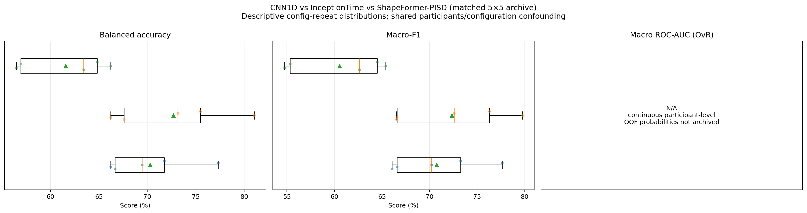
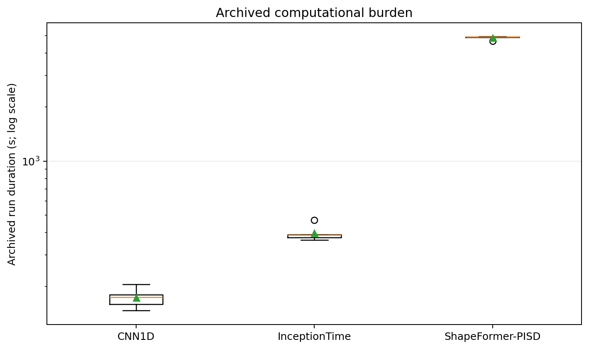
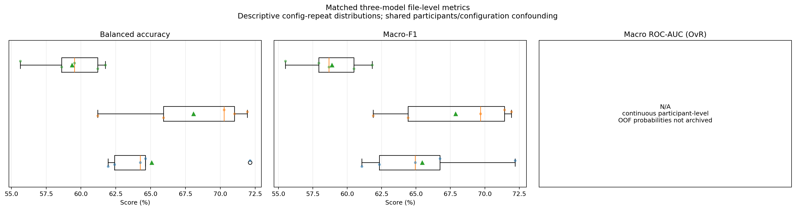
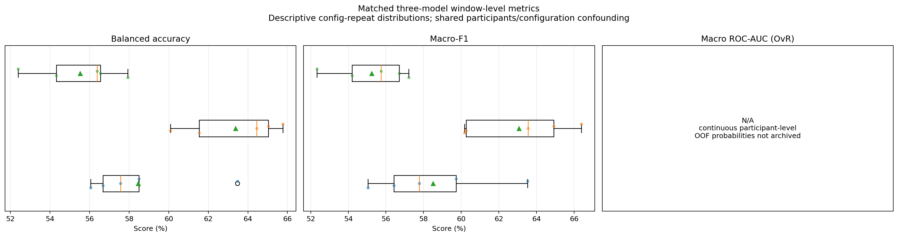
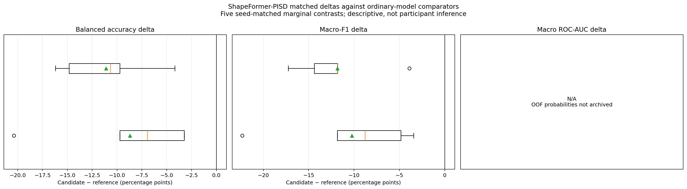

5 s, 50% overlap, patience 20, no extra PPI/HRV input; 3 models × 5 matched repeat seeds.
| rank | config_or_model | model | subject_BA_mean_sd_percent | subject_BA_repeat_t_CI95_percent | subject_macro_F1_mean_sd_percent | subject_macro_F1_repeat_t_CI95_percent | subject_macro_ROC_AUC | ROC_AUC_applicability | scientific_role |
|---|---|---|---|---|---|---|---|---|---|
| 1 | InceptionTime | inception_time | 72.7 ± 6.0 | [65.2, 80.2] | 72.3 ± 5.9 | [65.1, 79.6] | N/A | continuous participant-level OOF probabilities not archived | historical_hypothesis_generation_only |
| 2 | CNN1D | cnn1d | 70.3 ± 4.5 | [64.7, 75.9] | 70.8 ± 4.8 | [64.7, 76.8] | N/A | continuous participant-level OOF probabilities not archived | historical_hypothesis_generation_only |
| 3 | ShapeFormer-PISD | shapeformer | 61.6 ± 4.5 | [55.9, 67.2] | 60.5 ± 5.1 | [54.2, 66.9] | N/A | continuous participant-level OOF probabilities not archived | historical_hypothesis_generation_only |
rank): Ordinal position after applying the table's declared sorting rule. Formula: N/A — identifier, provenance, configuration, status, or other non-arithmetic field.config_or_model): Direct identifier, provenance, configuration, grouping, or status value. Formula: N/A — identifier, provenance, configuration, status, or other non-arithmetic field.model): Direct identifier, provenance, configuration, grouping, or status value. Formula: N/A — identifier, provenance, configuration, status, or other non-arithmetic field.subject_BA_mean_sd_percent): Compact mean and sample-standard-deviation display for Macro-average recall across the K declared classes. Formula: display = 100 * mean +/- 100 * sqrt[sum_i (x_i - mean)^2 / (n - 1)]subject_BA_repeat_t_CI95_percent): Reported 95% confidence bound or interval for Macro-average recall across the K declared classes. Formula: repeat CI95 = 100 * (mean +/- t_(0.975,n-1) * sample_SD / sqrt(n))subject_macro_F1_mean_sd_percent): Compact mean and sample-standard-deviation display for Unweighted mean of the K class-specific F1 scores. Formula: display = 100 * mean +/- 100 * sqrt[sum_i (x_i - mean)^2 / (n - 1)]subject_macro_F1_repeat_t_CI95_percent): Reported 95% confidence bound or interval for Unweighted mean of the K class-specific F1 scores. Formula: repeat CI95 = 100 * (mean +/- t_(0.975,n-1) * sample_SD / sqrt(n))subject_macro_ROC_AUC): Area under the empirical receiver-operating-characteristic curve. Formula: ROC-AUC = integral_0^1 TPR(FPR) dFPR (empirical trapezoidal area)ROC_AUC_applicability): Direct method, applicability, reason, metric-roster, or cluster-unit provenance for the reported statistic. Formula: N/A — identifier, provenance, configuration, status, or other non-arithmetic field.scientific_role): Direct identifier, provenance, configuration, grouping, or status value. Formula: N/A — identifier, provenance, configuration, status, or other non-arithmetic field.| source_study | parameter_group | parameter | unique_value_count | observed_values | parameter_role | comparison_interpretation |
|---|---|---|---|---|---|---|
| matched_early_three_model | matched_contract | window_seconds | 1 | 5.0000 | fixed | matched_across_all_three_models |
| matched_early_three_model | matched_contract | hop_seconds | 1 | 2.5000 | fixed | matched_across_all_three_models |
| matched_early_three_model | matched_contract | overlap_percent | 1 | 50.0000 | fixed | matched_across_all_three_models |
| matched_early_three_model | matched_contract | patience | 1 | 20 | fixed | matched_across_all_three_models |
| matched_early_three_model | matched_contract | extra_input | 1 | 0 | fixed | matched_across_all_three_models |
| matched_early_three_model | matched_contract | split_seeds | 1 | [42, 10042, 20042, 30042, 40042] | fixed | matched_across_all_three_models |
source_study): Direct identifier, provenance, configuration, grouping, or status value. Formula: N/A — identifier, provenance, configuration, status, or other non-arithmetic field.parameter_group): Direct identifier, provenance, configuration, grouping, or status value. Formula: N/A — identifier, provenance, configuration, status, or other non-arithmetic field.parameter): Direct identifier, provenance, configuration, grouping, or status value. Formula: N/A — identifier, provenance, configuration, status, or other non-arithmetic field.unique_value_count): Number of units satisfying the column's stated inclusion condition. Formula: count = sum_i 1[unit i satisfies the stated condition]observed_values): Persisted source-table value for `observed_values`; producer-specific semantics are not reinterpreted by the shared table renderer. Formula: N/A — direct persisted/source-defined value; the table renderer applies no additional arithmetic.parameter_role): Direct identifier, provenance, configuration, grouping, or status value. Formula: N/A — identifier, provenance, configuration, status, or other non-arithmetic field.comparison_interpretation): Direct identifier, provenance, configuration, grouping, or status value. Formula: N/A — identifier, provenance, configuration, status, or other non-arithmetic field.



